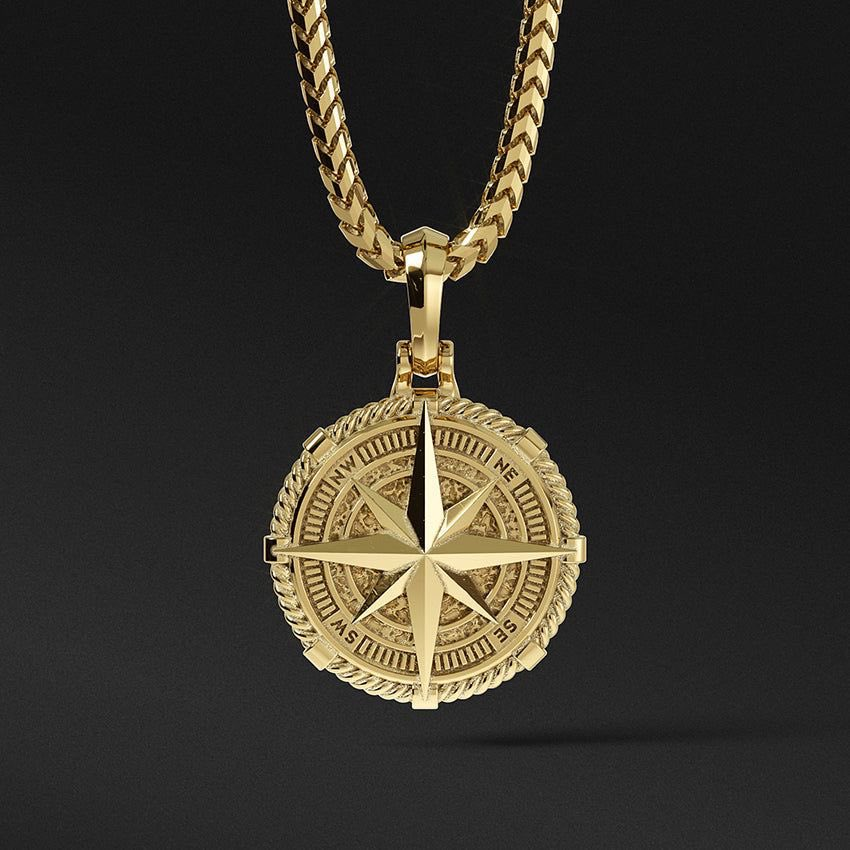
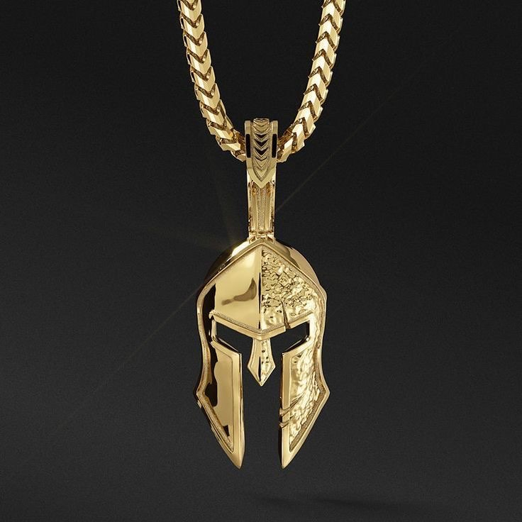
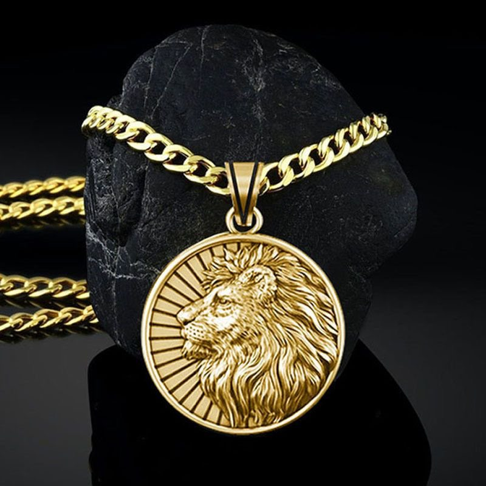
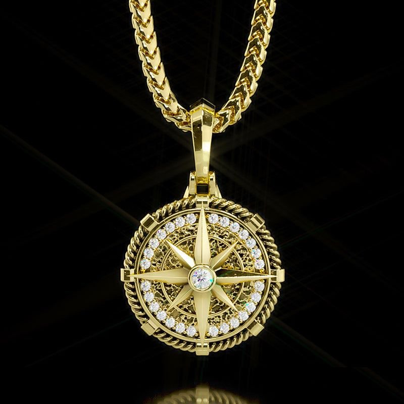
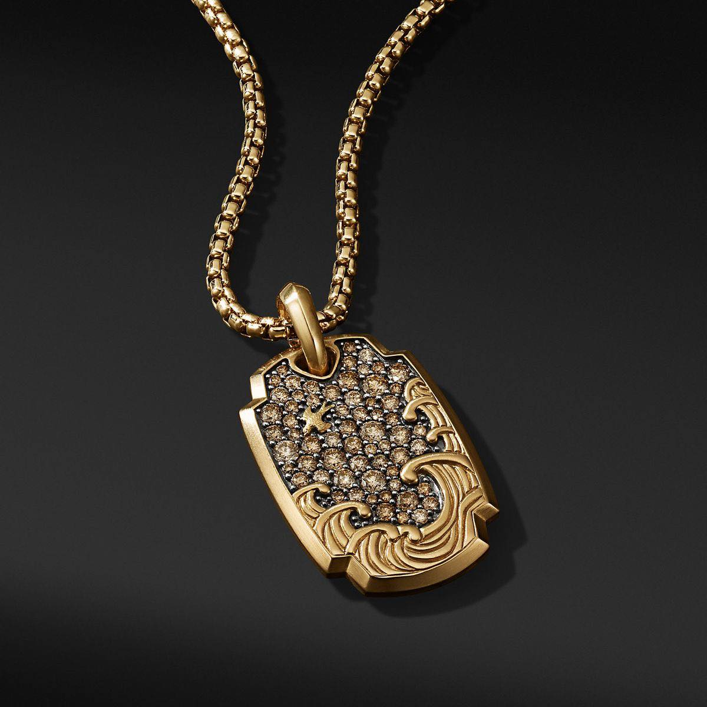
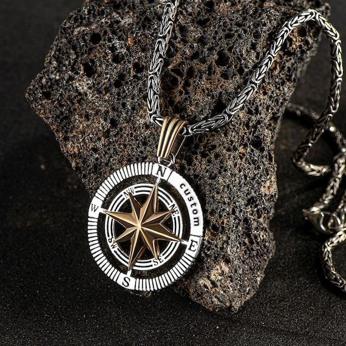
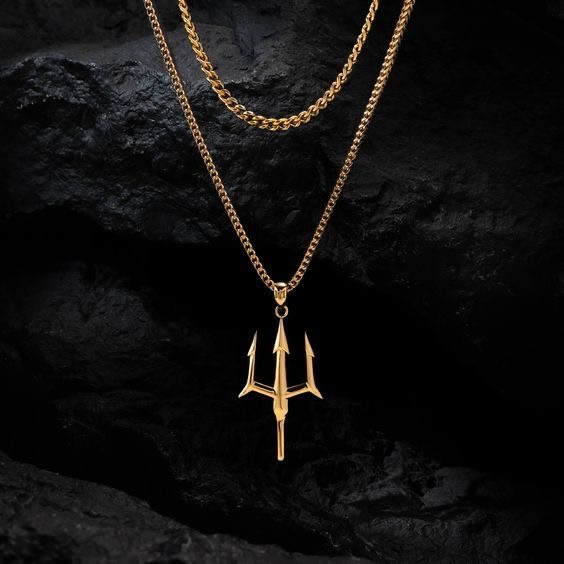
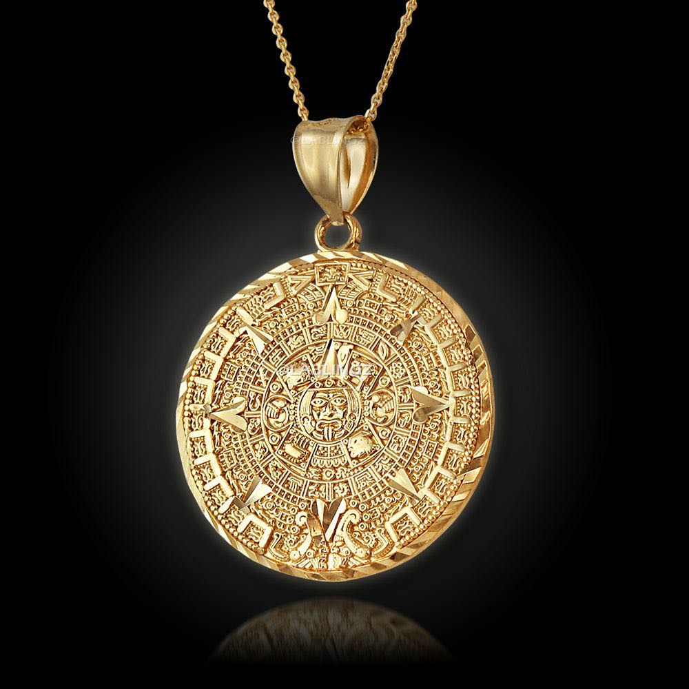

Nyakláncok
Fedezze fel lenyűgöző nyakláncainkat, melyek kifinomultságot és stílust kölcsönöznek viselőjüknek. Válasszon a vintage bájú, modern minimalista vagy extravagáns darabok közül. Kiváló minőségű anyagokból készültek, és minden alkalmazkodnak. Legyen az öltözékének elengedhetetlen része! Böngésszen most és találja meg tökéletes nyakláncát!
Filters | Order by

Fasza Gyűrű | 50 000Ft 


csodas gyuru | 50 000Ft

jo gyuru | 50 000Ft

szep gyuru | 50 000Ft

csodas gyuru | 50 000Ft

csodas gyuru | 50 000Ft

csodas gyuru | 50 000Ft

csodas gyuru | 50 000Ft